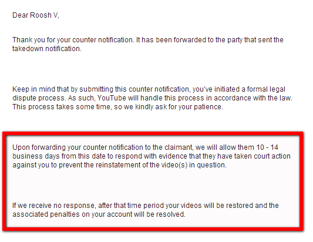

Daryush "Roosh" Valizadeh created ROK in October 2012. You can visit his blog at RooshV.com or follow him on Twitter and Facebook.


Last month, the BBC aired a hit piece against myself and other manosphere figures in a program called Extreme UK: Men At War, hosted by male feminist Reggie Yates. The program not only distorted my work, but obsessively discussed the false accusation that I was an abuser of women. I replied to the propaganda piece to clear my name through a Youtube video, using fair-use excerpts of the program. Three weeks later, an employee for the production company that produced the BBC program, Sundog Pictures, filed a DMCA takedown order against it. The video was removed from Youtube, effectively censoring my response.
On January 9 I logged into my Youtube account to see that my response video against the BBC program was taken down due to a copyright claim by Sundog Pictures


My response video showed short clips of the BBC program, particularly the excerpts that made false or distorted claims about me, along with new commentary I delivered personally on camera. According to copyright law, the commentary that I provided alongside the excerpts falls under fair use.
…a fair use is any copying of copyrighted material done for a limited and “transformative” purpose, such as to comment upon, criticize, or parody a copyrighted work. Such uses can be done without permission from the copyright owner. [Source: Standford]
The fair use guide on Vimeo also shows that my video is firmly within the realm of fair use:
In other words, does your video alter the original work to give it a new meaning or shed new light on it? Uses that directly appraise or comment on the original work are more likely to be transformative because they add a new meaning or message. On the other hand, are you using the material because you needed to put something in a particular scene and the copyrighted work happens to fit? Such uses will probably point away from fair use.
Your use doesn’t necessarily have to be “transformative” to qualify for fair use (although it definitely helps). Any use that furthers the public interest could potentially tip this factor in your direction. Parody, criticism, news reporting, scholarship, and commentary are all areas where courts have traditionally recognized fair use.
My video was transformative in nature, did not use excessively long clips from the original program, could not be confused for the original, and produced completely new commentary and content. There is zero doubt that my video is legal and does not break any copyrights held by Sundog Pictures or the BBC, yet they still filed a claim against it.
The email left on the takedown notice was [email protected] A staff profile on the Sundog site reveals it to be Fabia Martin, a middle-aged woman who works as assistant producer, with no apparent training on copyright or legal issues. Further inspection of her LinkedIn profile suggests she’s a feminist spun from the same cloth as Reggie Yates, hinting towards a motive of leftist censorship instead of a genuine violation of copyright law.
Official title as Assistant Producer… she makes sure the coffee stays hot during filming
Influenced by a privileged “feminist” who would be a nobody without rich men to help her
Did the Sundog Pictures leadership command Fabia to wrongfully take down my video or did she act on her own accord? I asked Sundog through their official Twitter account, but have not yet received a response.
.@sundog_pictures: was taking down my video a company directive or did your employee Fabia Martin go rogue?
— Roosh (@rooshv) January 8, 2016
Since they have not distanced themselves from Fabia’s actions, we have to assume that the management team agrees with her wrongful takedown of a video that did not violate any established copyright law. Both Fabia and Sundog’s leadership are complicit in this censorship act.
A DMCA takedown request was also used against Diana Davison, who uploaded a video critiquing the production. Like myself, she believes her video falls within fair-use doctrine, and notes that I can certainly claim fair-use since I was responding to my own appearance on the program.
Davison rightfully points out the hypocrisy of Sundog’s mission statement encouraging “social production” and “engagement” while using wrongful DMCA takedowns to silence rebuttals.
The Reggie Yates program used extensive clips from my Youtube channel and lecture in order to create their program. I did not charge for the use of these clips in a production that earned Sundog and its staff hundreds of thousands of dollars from the BBC. Yet when I produced a basic video that defended myself against their false accusations, using less than two minutes of clips in a legal manner that is clearly classified as transformative under copyright law, they slap me in the face by wrongfully censoring me and my critiques of their program. That’s the thanks I get for giving them full access to my London lecture and free content for their program.
In the face of actions by Sundog and its employees, who would agree to appear on their programs now? Not only would you have no control about how you are portrayed, you’re not even allowed to publicly respond to the claims they air about you without facing censorious retribution. I sincerely hope that by publishing this article, I can warn others who may be offered an interview for a Sundog production in the future. They have no concern for displaying objectivity or practicing fairness, and will attempt to harm your reputation and silence your speech if it’s convenient for their agenda.
Reggie Yates, host of the Sundog Pictures program
The actions of Sundog Pictures and Fabia Martin show how rigged the game is when you deal with the mainstream media. Not only do they spin and twist your words and ideas, but they will also find a way to bludgeon you upside the head if you try to defend yourself against them. I want to be upset at their censorship, but we all know that their action is part of a desperate last gasp of the mainstream media as they lose control over their carefully constructed narrative.
In five years, Sundog Pictures will go out of business, the BBC will see record low ratings, and Fabia Martin will be waiting in line for food at a soup kitchen while our beliefs will reach a tipping point to begin dominating the culture and causing real pain and retribution for the totalitarian leftists we currently have to endure. They may have won this battle, but we will win the war.
I re-uploaded my original video on another platform. Here’s the video that Sundog Pictures is trying to censor…
Video link: http://dai.ly/x3loypq
Youtube will reinstate my video unless Sundog Pictures files a court order against me. This means that they must state under oath that my video is not fair use. Your move, Sundog.

Sundog Pictures has declined to pursue legal action against me, meaning that Youtube has restored my video:
This is a great victory for fair use and legal speech. I will always fight against any unjust attacks to my videos and writing.
Read Next: The BBC And Reggie Yates Release Their Hit Piece On The Manosphere